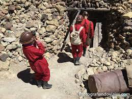

Visitar Potosí es conocer parte de su historia, no en vano el cerro Rico, una montaña de unos 4.800 metros de altitud localizada en la antigua Villa Imperial de Potosí, ha sido lugar histórico para la extracción de preciados metales como la plata o el oro.
Los primeros registros de enfrentamientos por este territorio boliviano datan del siglo XV cuando incas y guaraníes rivalizaban fuertemente. Antes de la colonización inca, los pobladores charcas, chullpas, quechuas y aymaras conocían e incluso trabajaban la plata, sin embargo, fueron los incas los primeros en comercializar la gran riqueza que escondía el cerro Rico.
No obstante, los derrumbes en las primeras minas del cerro fueron interpretados por éstos como una advertencia de los dioses dejando el interior del cerro y su rico metal tranquilos. Así quedó hasta que llegaron los españoles en 1545. Cuenta la historia que un pastor indígena que perdió sus llamas en la cima del cerro descubrió, casualmente, las vetas del cerro Rico.
Los españoles, ávidos de oro y plata en nombre de la Corona, comenzaron a explotar las minas y a extraer toda la plata posible a costa de la salud y sufrimiento de los pobladores de la época. El resto cumple el típico esquema de explotación minera, crecimiento desmedido de la ciudad, revueltas, destrucción y pobreza.
Visita a las minas del Cerro Rico
Un tour inolvidable es visitar las minas del Cerro Rico. En el cerro existen diferentes cooperativas de mineros que extraen minerales como el zinc y el plomo de forma bastante primitiva. Muchas de estas cooperativas reciben turistas, por lo cual algunas agencias de viaje tienen un convenio para llevar visitantes. La visita a las minas muestra la cruda realidad de los mineros, quienes trabajan muy duro en condiciones extremas, muchas veces sufriendo accidentes graves o mortales, para extraer el mineral que cambiaran por poco dinero.
Dicho esto, cabe señalar que generalmente se habla del tour del Salar de Uyuni como un recorrido de entre dos y cuatro días, no solo por esta extensión blanca gigantesca, sino como una ruta que también incluye numerosos atractivos del altiplano boliviano, como espectaculares lagunas de diversos colores, formaciones rocosas y un entorno desértico único repleto de fauna autóctona.
a mina Pailaviri (4200Mt.) que pertenece a COMIBOL, es la mina más antigua de Potosí, en continuo trabajo desde 1545; alli se extria la plata y ahora se explota el estaño. El cerro llegó a tener más de 5.000 bocaminas y socavones muchísimos de ellos interconectados.
Antes de visitar la mina se recomienda pasar por el Mercado Minero, donde venden desde picos, palas, hojas de coca, alcohol hasta mechas y cartuchos de dinamita. En el mercado es una buena idea comprar algún presente para llevarle a los mineros, como por ejemplo coca.
Algunos turistas llegan a las minas por su cuenta, tomando alguna "combi" desde el centro de Potosí y en el cerro arreglan el tour con los propios mineros. Está opción es más libre pero también más riesgosa.